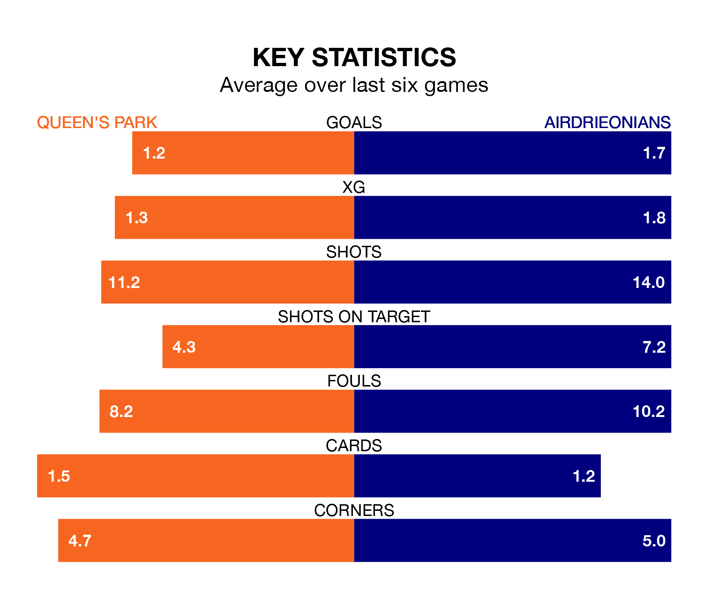

Struggling Queen's Park face Airdrieonians at Hampden Park on Friday looking to build on a win in their last league outing.
After securing all three points with a 5-0 victory over Arbroath on April 27, the Spiders sit eighth in the Championship.
They travel to play an Airdrieonians side fourth in the standings, who were held in their last match, 0-0 against Dundee United, on April 26.
In the last 10 years, Queen's Park and Airdrieonians have played each other on 21 occasions. Queen's Park won two of them, Airdrieonians eight, and they drew 11 times.
On average, the Spiders scored 1.1 goals and Airdrieonians 1.6 in those matches.
Their last meeting was on March 2, when they played out a 1-1 draw.
In Ruari Paton, Queen's Park have one of the league's most on-form strikers so far this season. He has notched 16 goals in 35 appearances, to sit third in the scoring charts.
His goal rate of one every 195 minutes is quicker than that of Nikolay Todorov, Airdrieonians's top scorer with a goal every 291 minutes, and a total of six goals in 32 games.
With 44 goals in 35 games so far this season, the away side are scoring at below the league average rate with 1.3 goals per game. But they are conceding fewer than average too, letting in 42 goals at a rate of 1.2 per game.
The Spiders, meanwhile, are average scorers, with 1.4 goals per game. They have conceded 1.6 goals per game.
The hosts are in mixed form in the Championship, with two wins and a draw from their last six games.
With four wins and a draw over that period, Airdrieonians's form is much better – they have taken 13 points from 18, compared to Queen's Park's seven.
Updated: 12:00 (UTC), 02/05/24